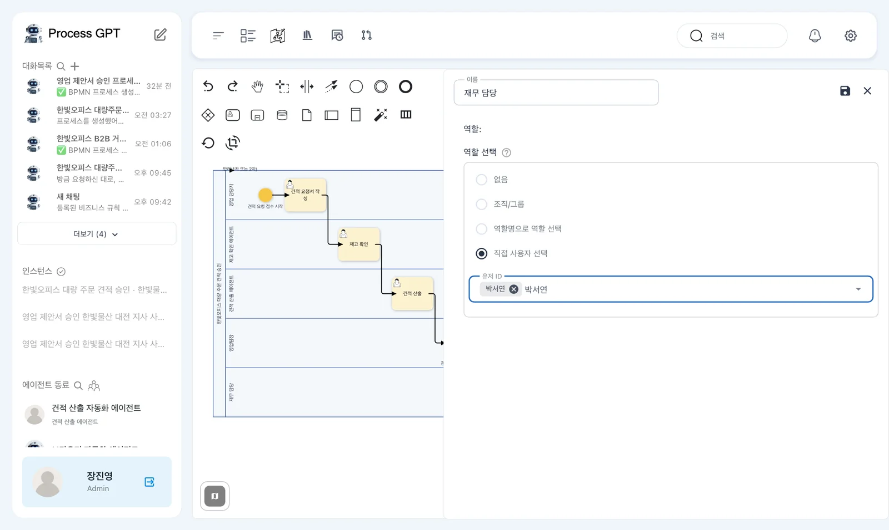
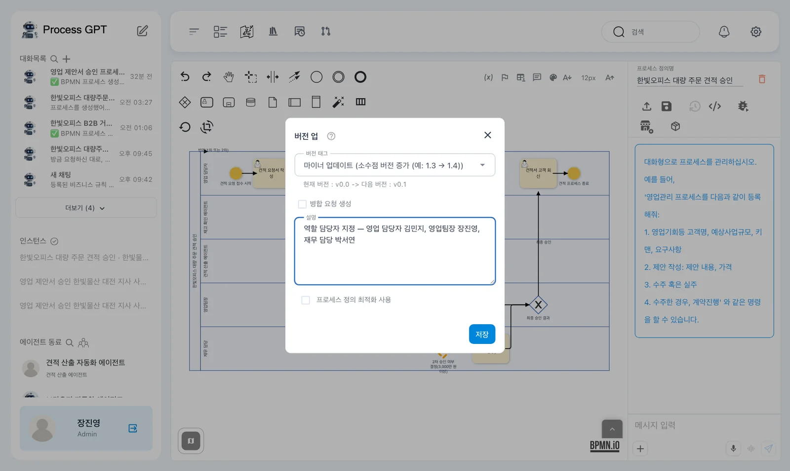
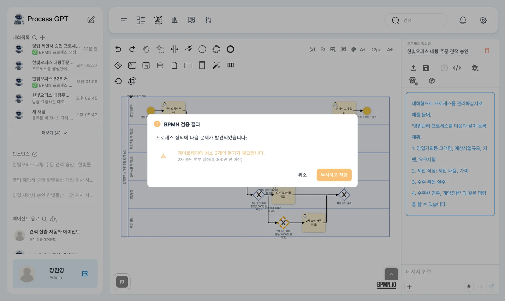
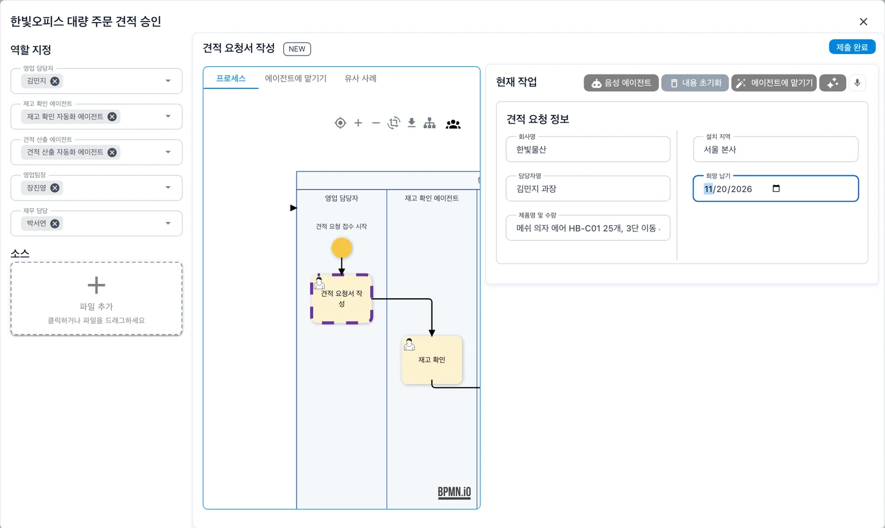
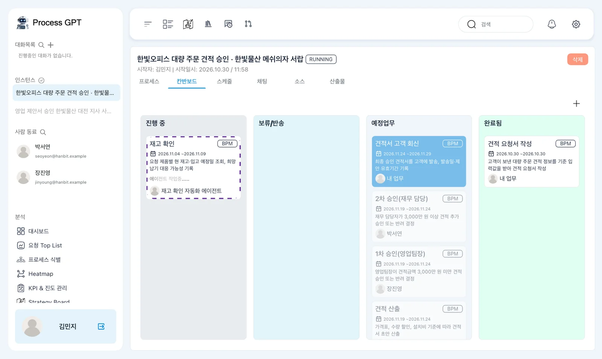
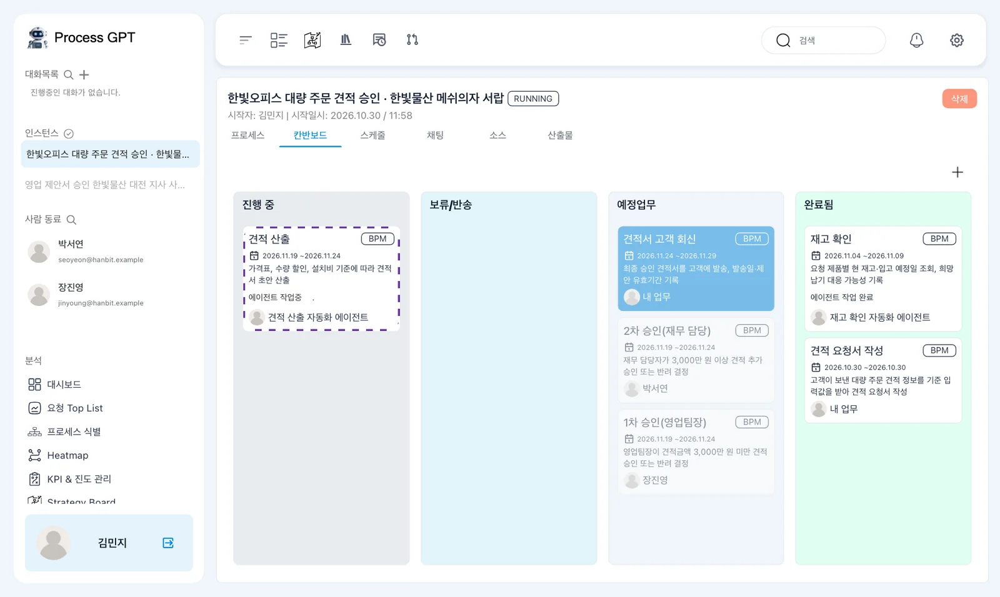
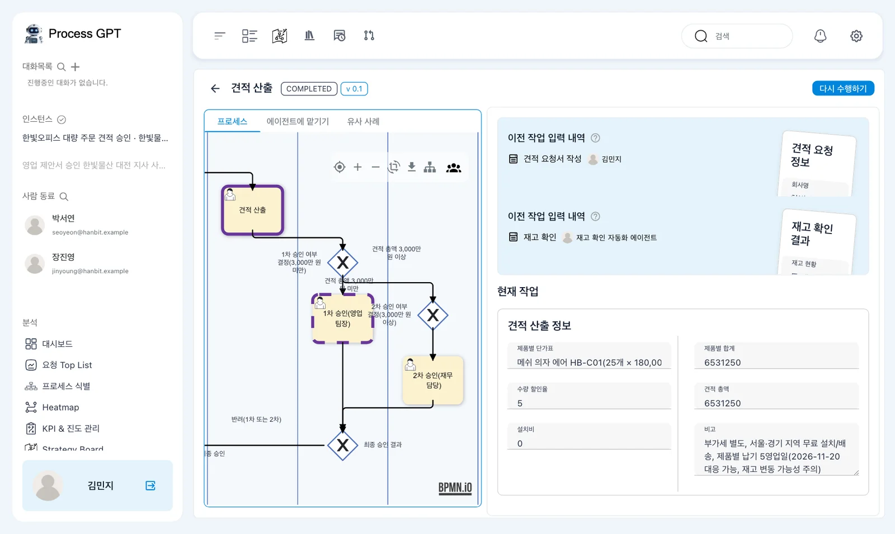
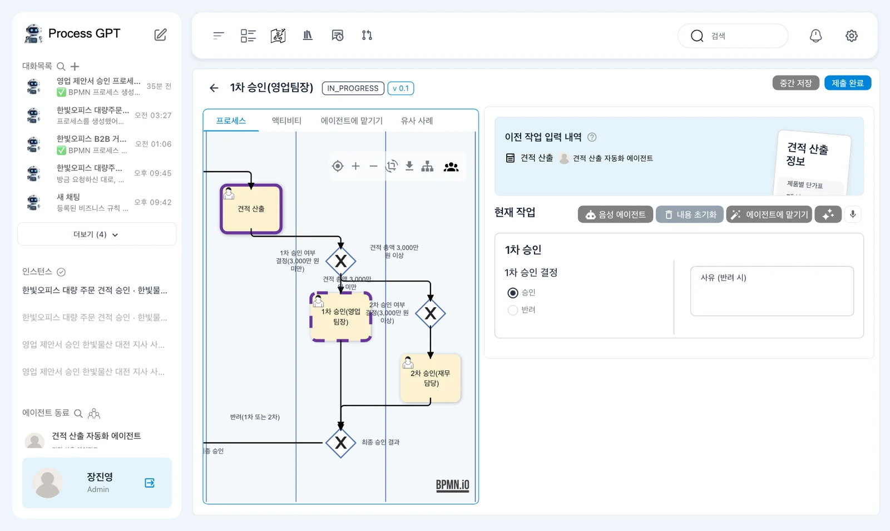
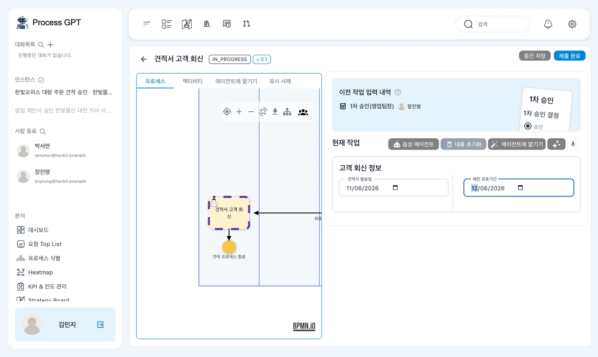
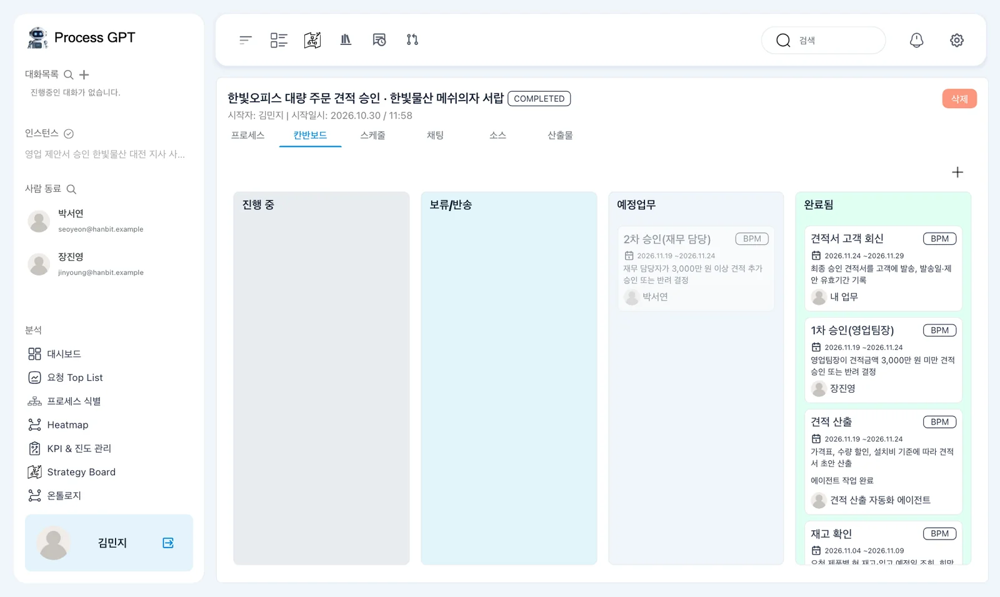

12장에서 규정으로 만든 견적 프로세스를 실행합니다. 에이전트가 채운 재고·견적 정보를 확인하고, 사람이 승인한 뒤 고객 회신까지 마칩니다.
설치본 수정이 필요합니다
이 장의 실행 화면은 아래 수정을 넣은 설치본(2026-10-30)에서 찍었습니다. 이 수정이 설치 저장소에 들어가기 전의 설치본에서는 에이전트 단계가 집히지 않거나 실행이 중간에 멈출 수 있습니다. 들어가면 이 안내를 지웁니다.
- 설치: process-gpt-infra-docker #1
- 화면: process-gpt-vue3 #231 · #233 · #234
- 실행 엔진: process-gpt-completion #6 · #7 · #8
- 딥 에이전트: process-gpt-deepagents #5 · #7 · #8
이번에는 에이전트가 두 단계를 맡습니다#
에이전트 단계는 레인에 지정된 담당자가 에이전트인 단계입니다. 이번 정의에서는 「재고 확인」과 「견적 산출」을 에이전트만 담당합니다. 두 단계는 에이전트가 폼을 채우고, 사람의 확인 없이 바로 끝냅니다.
영업 담당자는 견적 요청을 받아 적습니다. 에이전트가 재고를 확인하고 견적을 산출하면, 사람이 승인 단계에서 결과를 확인합니다. 에이전트 단계의 완료와 사람의 승인은 서로 다른 단계입니다.
그림의 정의 이름은 「한빛오피스 대량 주문 견적 승인」입니다. 연결된 에이전트 이름은 「재고 확인 자동화 에이전트」와 「견적 산출 자동화 에이전트」입니다.
12장에서 만든 이름과 다를 수 있습니다
자신의 정의는 「한빛오피스 대량 주문 견적 프로세스」일 수 있습니다. 에이전트도 「재고 확인 에이전트」·「견적 산출 에이전트」처럼 이름이 다를 수 있습니다. 이 장에서는 그림의 이름을 사용합니다. 이름과 함께 각 레인의 담당을 확인합니다.
이번 견적이 지나갈 길 읽기#
처음 세 단계는 「견적 요청서 작성」 → 「재고 확인」 → 「견적 산출」입니다. 그다음 「1차 승인 여부 결정(3,000만 원 미만)」에서 견적 총액에 따라 갈라집니다.
| 조건 | 그림의 정의에서 이어지는 길 |
|---|---|
| 「견적 총액 3,000만 원 미만」 | 「1차 승인(영업팀장)」 |
| 「견적 총액 3,000만 원 이상」 | 「2차 승인 여부 결정(3,000만 원 이상)」 → 「2차 승인(재무 담당)」 |
| 「최종 승인 결과」의 「최종 승인」 | 「견적서 고객 회신」 → 끝 |
| 「최종 승인 결과」의 「반려(1차 또는 2차)」 | 「견적 산출」로 돌아감 |
이번 실행의 견적 총액은 6,531,250원입니다. 3,000만 원 미만이므로 영업팀장의 1차 승인을 거칩니다. 승인 뒤에는 영업 담당자가 고객 회신을 처리합니다.
12장에서 규정대로 고쳤다면 3,000만 원 이상 쪽의 모양은 그림의 정의와 다를 수 있습니다. 이번 실행은 그 길을 지나가지 않습니다.
따라 하기 1 — 사람 담당자 지정하기#
장진영으로 담당자를 지정합니다. 방법은 5장과 같습니다. 이번 정의의 레인은 가로로 놓여 있습니다.
- 견적 프로세스의 하위 프로세스 화면에서 「수정」을 누릅니다.
- 「영업 담당자」 레인 이름을 두 번 누릅니다. 「직접 사용자 선택」으로 김민지를 지정합니다.
- 「영업팀장」 레인 이름을 두 번 누릅니다. 「직접 사용자 선택」으로 장진영을 지정합니다.
- 「재무 담당」 레인 이름을 두 번 누릅니다. 「직접 사용자 선택」으로 박서연을 지정합니다.
- 「재고 확인 에이전트」와 「견적 산출 에이전트」 레인은 이미 에이전트가 담당하므로 그대로 둡니다.

편집 모드의 왼쪽 아래 미니맵이 맨 아래 「재무 담당」 레인 이름을 가렸습니다. 같은 경우에는 미니맵의 단추로 닫은 뒤 레인 이름을 누릅니다.
따라 하기 2 — 담당자를 지정한 정의 저장하기#
- 오른쪽 위 저장을 누릅니다.
- 「버전 업」 창에서 버전을 확인합니다. 실습에서는 「현재 버전 : v0.0 -> 다음 버전 : v0.1」로 표시되었습니다.
- 설명에
역할 담당자 지정 — 영업 담당자 김민지, 영업팀장 장진영, 재무 담당 박서연을 입력합니다. - 「저장」을 누릅니다. 「BPMN 검증 결과」 창이 나오면 내용을 확인합니다.

그림의 정의에서는 다음 경고가 나왔습니다.
「프로세스 정의에 다음 문제가 발견되었습니다: 게이트웨이에 최소 2개의 분기가 필요합니다.」
대상은 「2차 승인 여부 결정(3,000만 원 이상)」입니다. 이 갈림길에서 나가는 길이 하나뿐이어서 나온 경고입니다. 창에는 「취소」와 「무시하고 저장」이 있습니다.

이 실습에서는 「무시하고 저장」을 눌렀습니다. 3,000만 원 미만 견적을 처리하는 이번 실행에는 지장이 없었습니다.
경고는 자신의 정의를 기준으로 읽습니다
경고 내용은 정의에 따라 다르거나 나오지 않을 수 있습니다. 여기서 확인한 것은 그림의 갈림길 경고와 이번 실행입니다. 다른 경고까지 같은 것으로 보지 않습니다.
따라 하기 3 — 김민지가 견적 요청 입력하기#
견적 요청은 영업 담당자가 받아 적습니다. 첫 단계의 역할은 실행 창을 연 사람이 맡습니다. 이번에는 김민지가 실행합니다.
- 김민지로 로그인합니다.
- 프로세스 체계도에서 견적 프로세스 카드를 열고 「실행」을 누릅니다.
- 실행 창의 「역할 지정」에서 아래 다섯 담당을 확인합니다.
- 첫 단계 「견적 요청서 작성」의 「견적 요청 정보」에 아래 값을 입력합니다. 단계 상태는 「NEW」입니다.
- 입력값을 확인하고 「제출 완료」를 누릅니다.
| 역할 | 그림의 실행 창에 지정된 담당 |
|---|---|
| 「영업 담당자」 | 김민지 |
| 「재고 확인 에이전트」 | 「재고 확인 자동화 에이전트」 |
| 「견적 산출 에이전트」 | 「견적 산출 자동화 에이전트」 |
| 「영업팀장」 | 장진영 |
| 「재무 담당」 | 박서연 |
| 「견적 요청 정보」의 칸 | 입력값 |
|---|---|
| 「회사명」 | 한빛물산 |
| 「담당자명」 | 김민지 과장 |
| 「제품명 및 수량」 | 메쉬 의자 에어 HB-C01 25개, 3단 이동 서랍 HB-S30 25개 |
| 「설치 지역」 | 서울 본사 |
| 「희망 납기」 | 2026-11-20 |
「희망 납기」는 날짜 칸입니다.

실습에서 만들어진 인스턴스 이름은 「한빛오피스 대량 주문 견적 승인 · 한빛물산 메쉬의자 서랍」입니다. 상태는 「RUNNING」이며, 「시작자: 김민지」로 표시되었습니다.
따라 하기 4 — 에이전트 단계가 끝나는 흐름 보기#
- 칸반보드의 「완료됨」에서 「견적 요청서 작성」을 확인합니다.
- 「진행 중」의 「재고 확인」 카드를 확인합니다. 담당은 「재고 확인 자동화 에이전트」이며, 카드 테두리는 점선입니다.
- 재고 확인이 끝나고 「견적 산출」이 「진행 중」으로 바뀌는 것을 확인합니다.
- 견적 산출도 끝나면 「1차 승인(영업팀장)」이 「진행 중」에 나타나는지 확인합니다. 담당은 장진영입니다.

처음 「예정업무」에는 「견적 산출」·「1차 승인(영업팀장)」·「2차 승인(재무 담당)」·「견적서 고객 회신」 카드가 미리 보입니다. 이 목록에는 이번 견적이 지나가지 않는 단계도 포함되어 있습니다.

실습에서는 요청 제출 후 약 8초에 재고 확인이 진행 중이었습니다. 약 23초에는 재고 확인이 끝나고 견적 산출이 진행 중이었습니다. 약 37초에는 견적 산출이 끝나고 영업팀장의 1차 승인이 진행 중이었습니다.
끝난 에이전트 카드에는 「에이전트 작업 완료」가 표시됩니다. 두 단계에서 사람이 폼을 제출하지 않아도 승인 단계까지 이어졌습니다.
시간과 결과는 실행 기록입니다
위 시간은 이번 실습에서 요청을 제출한 때부터 잰 값입니다. 에이전트의 결과는 회차마다 다를 수 있습니다. 자신의 실행에서는 카드 상태와 폼에 들어간 내용을 확인합니다.
따라 하기 5 — 에이전트가 채운 견적 검산하기#
- 「견적 산출」 카드를 누릅니다.
- 단계 화면의 「COMPLETED」와 「v 0.1」을 확인합니다.
- 「이전 작업 입력 내역」에서 「견적 요청서 작성 · 김민지」와 「재고 확인 · 재고 확인 자동화 에이전트」를 확인합니다.
- 「현재 작업」의 「견적 산출 정보」를 읽고 금액을 검산합니다.

오른쪽 위에는 「다시 수행하기」가 있습니다. 이 실습에서는 누르지 않았습니다.
이번 실행의 「제품별 단가표」에는 다음 내용이 들어갔습니다.
「메쉬 의자 에어 HB-C01(25개 × 180,000원 = 4,500,000원, 5% 할인), 3단 이동 서랍 HB-S30(25개 × 95,000원 = 2,375,000원, 5% 할인)」
| 칸 | 에이전트가 채운 값 |
|---|---|
| 「수량 할인율」 | 「5」 |
| 「설치비」 | 「0」 |
| 「제품별 합계」 | 「6531250」 |
| 「견적 총액」 | 「6531250」 |
「비고」에는 「부가세 별도, 서울·경기 지역 무료 설치/배송, 제품별 납기 5영업일(2026-11-20 대응 가능, 재고 변동 가능성 주의)」가 들어갔습니다.
검산하면 할인 전 금액은 4,500,000 + 2,375,000 = 6,875,000원입니다. 여기에 5% 할인을 적용하면 6,531,250원입니다. 「견적 총액」은 이 계산과 맞습니다.
그런데 「제품별 합계」에도 할인 뒤 금액인 6,531,250원이 들어갔습니다. 이 칸에는 할인 전 합계인 6,875,000원이 들어가야 합니다. 총액이 맞아도 각 칸의 뜻까지 맞는 것은 아닙니다.
재고 결과에서 확인되지 않은 값 찾기#
「재고 확인 결과」의 「재고 현황」에는 다음 내용이 들어갔습니다.
「두 제품 모두 가격표상 표준 납기(5영업일)이 명시되어 있으나, 자료상 현재 재고 수량이나 구체적 입고 예정일은 확인 불가」
「희망 납기 가능 여부」에는 다음 내용이 들어갔습니다.
「요청 납기일(2026-11-20)까지 대응 가능(※ 실제 재고 부족/입고 변동 여부는 재고 시스템 별도 확인 필요)」
재고 수량을 지어내지는 않았습니다. 그러나 「입고 예정일」에는 「2026-11-13」이 들어갔습니다. 구체적인 입고 예정일을 자료로 확인할 수 없다고 쓰면서 날짜도 적은 것입니다. 이 날짜는 확인이 필요한 값입니다.
에이전트 작업 완료와 결과 검토를 구분합니다
「에이전트 작업 완료」는 해당 단계가 끝났다는 표시입니다. 이번 결과에는 「제품별 합계」의 칸 실수와 근거를 확인해야 하는 「입고 예정일」이 있었습니다. 사람이 승인 단계에서 이런 내용을 확인합니다.
따라 하기 6 — 장진영이 1차 승인하기#
견적 총액 6,531,250원은 3,000만 원 미만입니다. 갈림길이 이번 견적을 「1차 승인(영업팀장)」으로 보냈습니다.
- 장진영으로 「나의 업무」의 「진행 중」을 확인합니다.
- 「1차 승인(영업팀장)」 카드를 엽니다. 카드에는 「영업팀장이 견적금액 3,000만 원 미만 견적 승인 또는 반려 결정」이 표시됩니다.
- 「이전 작업 입력 내역」의 「견적 산출 · 견적 산출 자동화 에이전트」에서 견적 산출 정보를 확인합니다.
- 「1차 승인」 폼의 「1차 승인 결정」에서 「승인」을 선택합니다.
- 「제출 완료」를 누릅니다.

「1차 승인 결정」에는 「승인」과 「반려」 동그라미 단추가 있고, 「사유 (반려 시)」 칸이 있습니다. 앞에서 찾은 칸 실수를 고치게 하려면 「반려」와 사유를 적습니다. 흐름도에서 「반려(1차 또는 2차)」는 「견적 산출」로 돌아갑니다. 이 실습에서는 「승인」으로 진행했습니다.
승인을 제출하고 약 10초 뒤 김민지에게 「견적서 고객 회신」이 왔습니다. 「최종 승인 결과」에서 「최종 승인」 길로 이어진 것입니다.
따라 하기 7 — 김민지가 고객 회신 입력하기#
- 김민지로 「견적서 고객 회신」을 엽니다.
- 「이전 작업 입력 내역」에서 「1차 승인(영업팀장) · 장진영」을 확인합니다.
- 「고객 회신 정보」의 「견적서 발송일」에
2026-11-06을 입력합니다. - 「제안 유효기간」에
2026-12-06을 입력합니다. 두 칸 모두 날짜 칸입니다. - 「제출 완료」를 누릅니다.

따라 하기 8 — 전체 완료와 남은 예정업무 확인하기#
- 인스턴스 상태가 「COMPLETED」인지 확인합니다.
- 칸반보드 「완료됨」에서 「견적서 고객 회신」·「1차 승인(영업팀장)」·「견적 산출」·「재고 확인」·「견적 요청서 작성」 다섯 카드를 확인합니다.
- 「예정업무」에 박서연 담당의 「2차 승인(재무 담당)」이 남아 있는지 확인합니다.

실행할 때 단계마다 할 일이 미리 만들어집니다. 이번 견적은 3,000만 원 미만이라 재무 담당의 2차 승인을 지나지 않았습니다. 그 카드가 「예정업무」에 남아 있어도 이번 인스턴스는 「COMPLETED」로 끝났습니다.
다음 장으로#
에이전트가 재고 확인과 견적 산출을 처리하고, 사람이 승인과 고객 회신을 처리했습니다. 에이전트가 채운 값에서는 계산뿐 아니라 각 칸의 의미와 자료의 근거도 확인했습니다.
다음 장에서는 MCP로 외부 도구를 에이전트에 연결해, 이번 견적을 회사 워드 양식에 채웁니다(14장).
확인 문제
- 이번 정의의 재고 확인과 견적 산출은 왜 사람이 제출하지 않아도 끝나나요?
- 견적 총액이 맞는데도 「제품별 합계」와 「입고 예정일」을 확인해야 하는 이유는 무엇인가요?
- 「2차 승인(재무 담당)」이 「예정업무」에 남았는데 인스턴스가 완료된 이유는 무엇인가요?
답
- 두 단계의 레인 담당이 에이전트뿐이기 때문입니다. 에이전트가 폼을 채우고 사람 확인 없이 단계를 끝냅니다.
- 「제품별 합계」에는 할인 전 6,875,000원이 들어가야 하지만 할인 뒤 6,531,250원이 들어갔습니다. 「입고 예정일」에는 자료로 확인할 수 없다고 하면서 「2026-11-13」을 적었습니다. 총액이 맞아도 칸의 의미와 근거를 따로 확인해야 합니다.
- 단계마다 할 일이 미리 만들어졌기 때문입니다. 이번 견적은 3,000만 원 미만이라 1차 승인과 고객 회신을 거쳐 끝났고, 2차 승인 단계는 지나지 않았습니다.